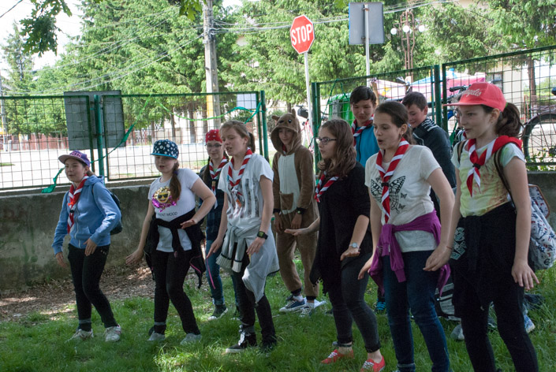

Jocul Satesc
Jocul Sătesc pune în fiecare an creativitatea şi spiritul de echipă al temerarilor la încercare. Temerarii sunt supuşi la diverse probe care le pun la încercare inteligenţa, spiritul de echipă, creativitatea şi originalitatea. Scopul acestei activităţi e de a lega noi prietenii şi de a pune în evidenţă talentele şi abilităţile fiecărui temerar.
